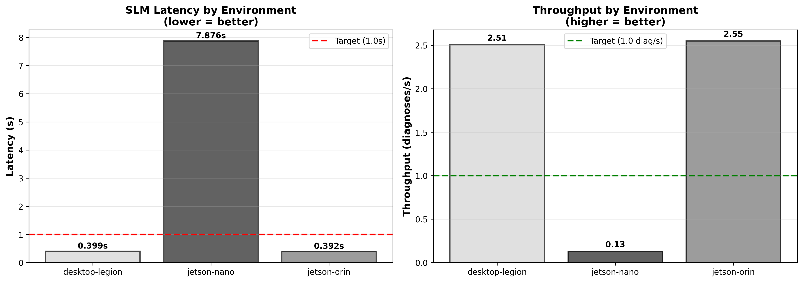
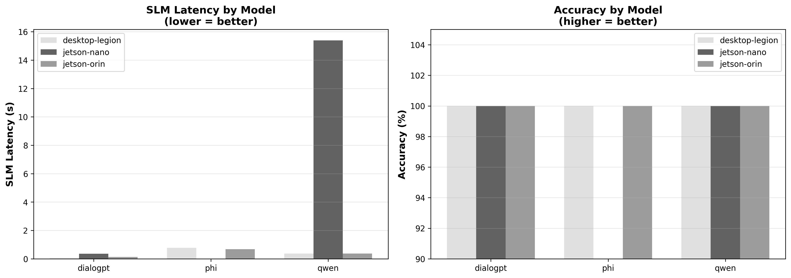
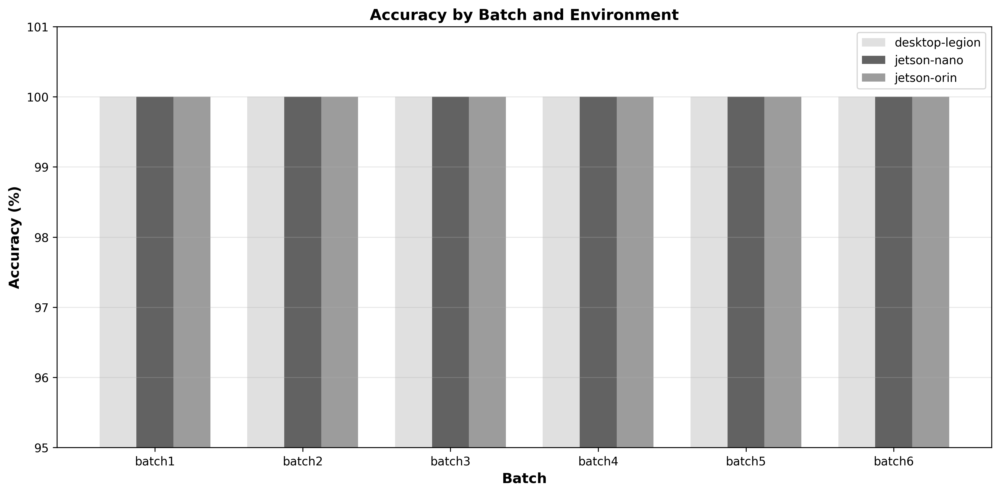
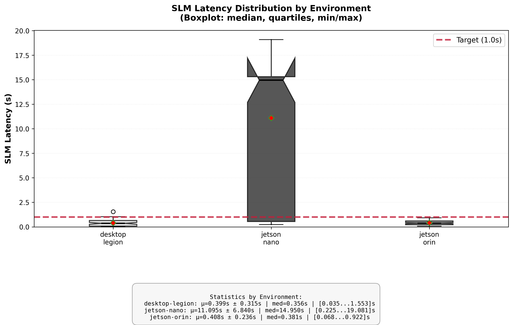
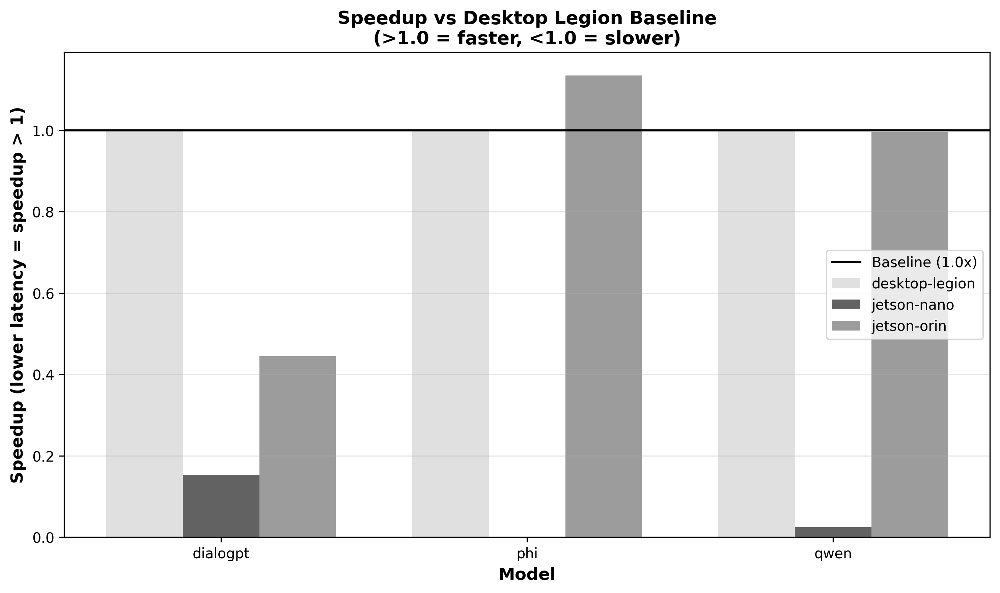
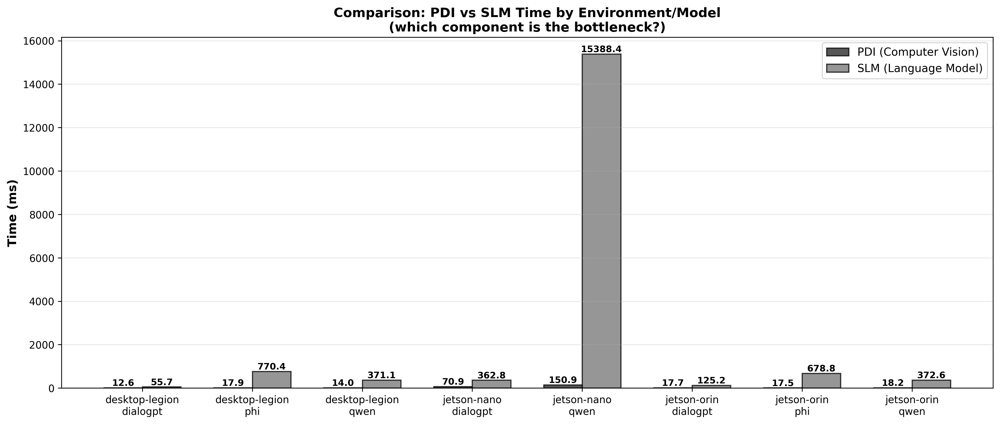
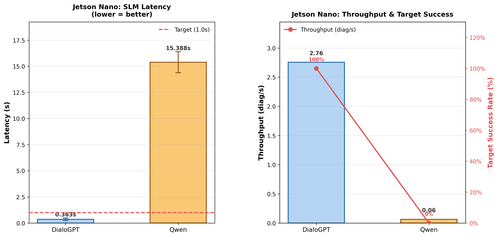
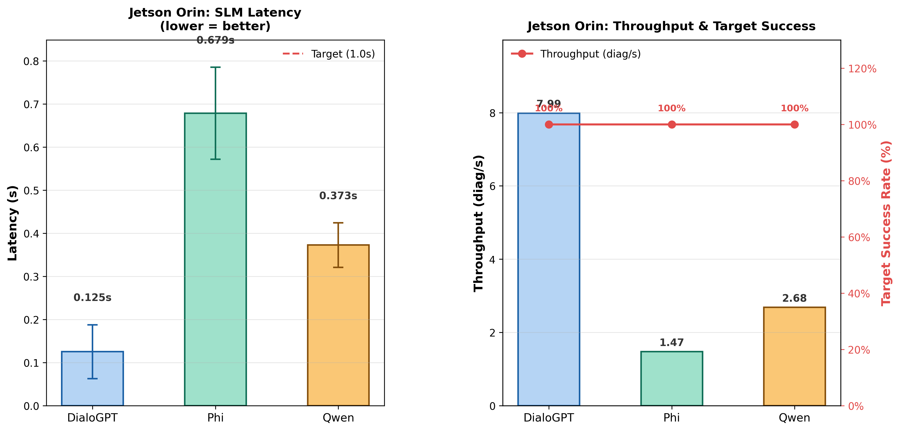
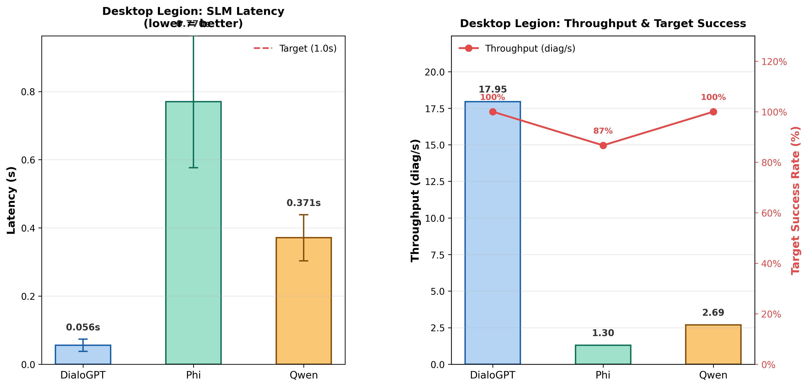

Performance by Environment - Comparison of SLM latency and throughput between Nano, Orin and Legion

Model Comparison - Evaluation of DialoGPT, Qwen and Phi in different environments

Accuracy by Batch - Verification of consistency across 6 test batches

Latency Distribution - Boxplot showing variability and outliers

Cross-Environment Speedup - Comparison of relative performance vs Desktop Legion

PDI vs SLM - Analysis of which component is the bottleneck (vision vs language)

Jetson Nano Performance - SLM latency, throughput and target success rate for each model

Jetson Orin Performance - SLM latency, throughput and target success rate for each model

Desktop Legion Performance - SLM latency, throughput and target success rate for each model
